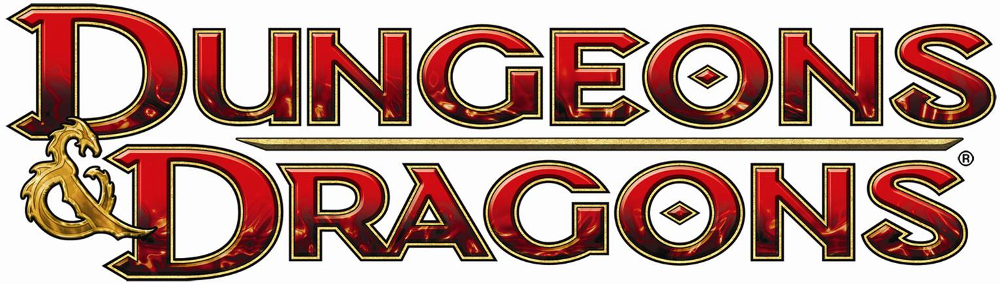

The Adjustment Bureau

The harrowing shenanigans of a loveable group of... morons.
The Cast:
- Jesse, The DM
- Dingus, The Fighter
- Monica, The Artificer
- Edge, The Monk
- Varis, The Rogue
- Valshara, The Cleric
- Stanis, The Druid
- Henson, The Ranger
Last Session
- We are officialy level 6.
- Our heroes returned to Sharn.
- Upon returning to the Broken Anvil, they discovered Merricks, Walter, and Lady E. waiting for them.
- Discussions were had
- The basic rundown of the adventure to Ondare was shared to the patrons.
- The party received 1000g as a whole on top of 300g for each individual.
- We informed them that The Vampire Blade was safe from The Emerald Claw, and that we did not have it nor know of it's wherabouts. We also informed them that Lucian Stellos was in the wind. Whether he was alive or not remains unknown.
- We learned that Lady E. has been working for Merricks this whole time.
- Merricks has also generously paid Walter Koenig for his services to The Broken Anvil and by association The Adjustment Bureau.(We no longer owe him his monthly.)
- We turned over the Schema to House Cannith for "safe keeping".
- (Monica only: She had a moment of apprehension towards this act and questioned Merricks intentions. However Lady E. seems to be above board.)
- Three months pass
- A Gargoyle delivers a message to The Broken Anvil from Lady E. Says to meet her at her residence.
- Upon arrival, we discover Lady under attack from thugs. We fight them bravely and fend them off.